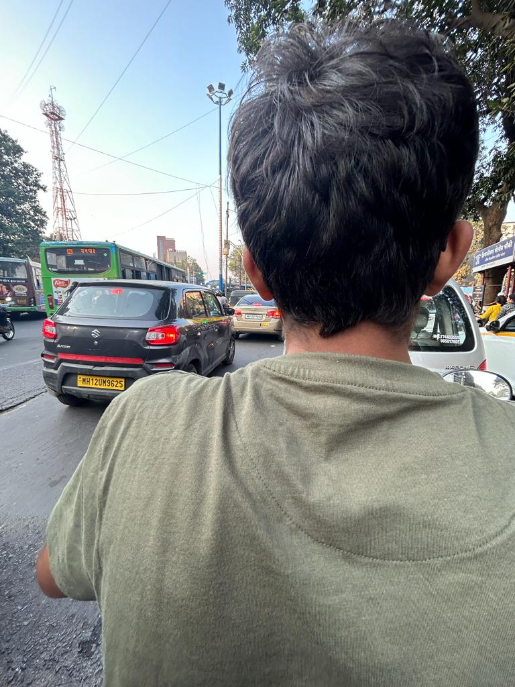
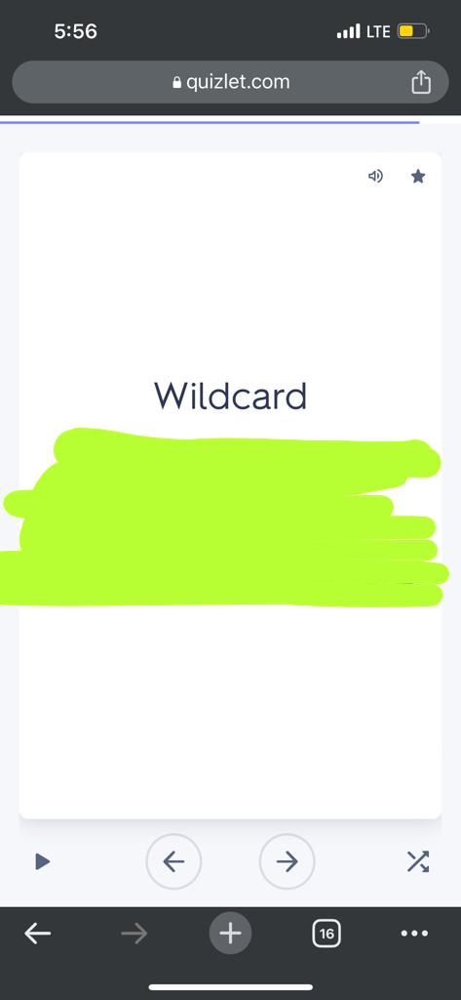
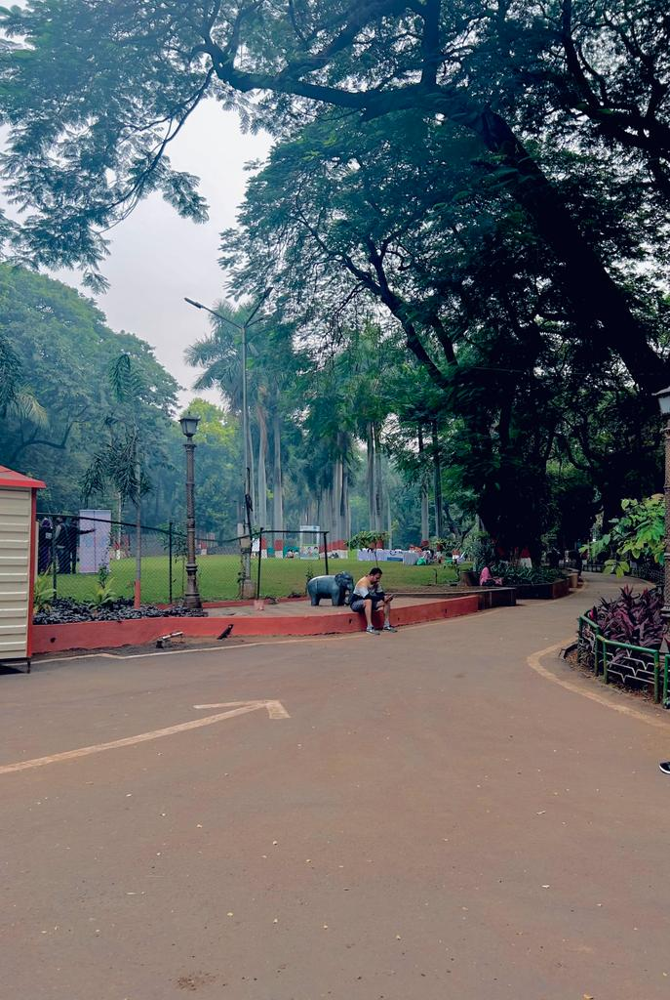
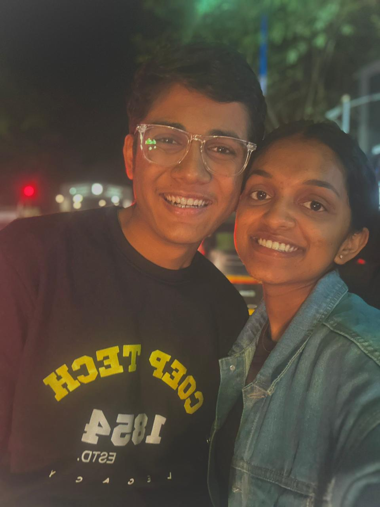
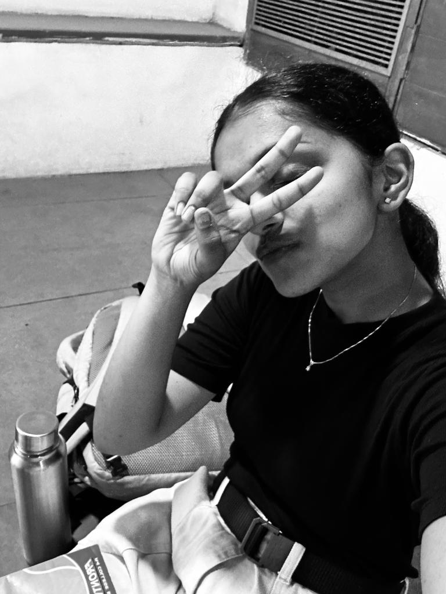
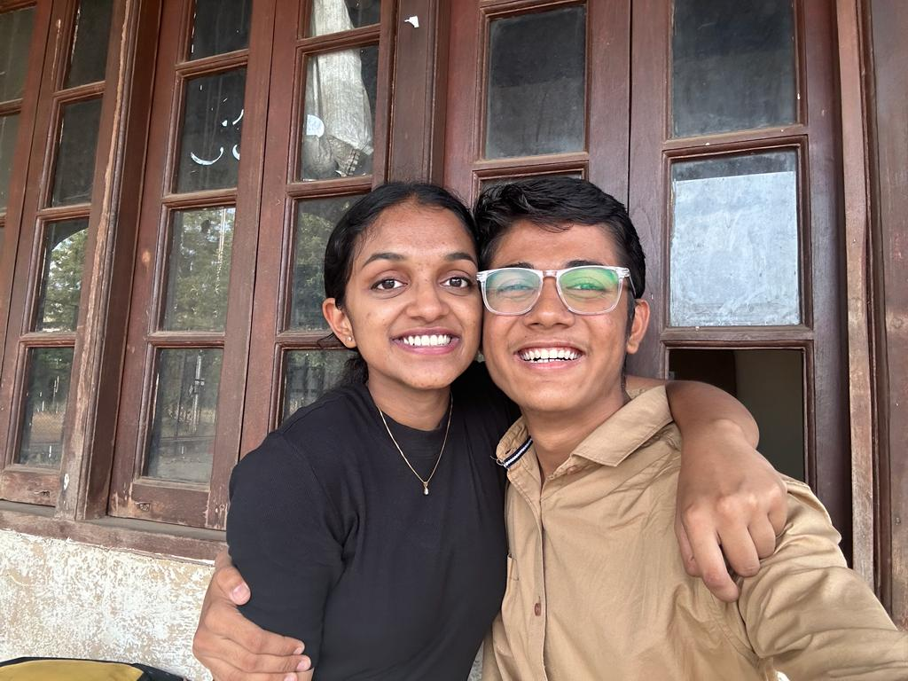
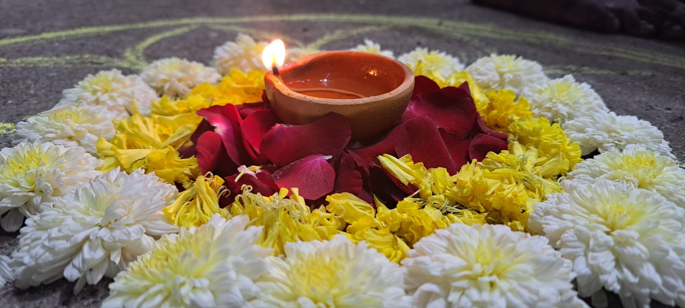
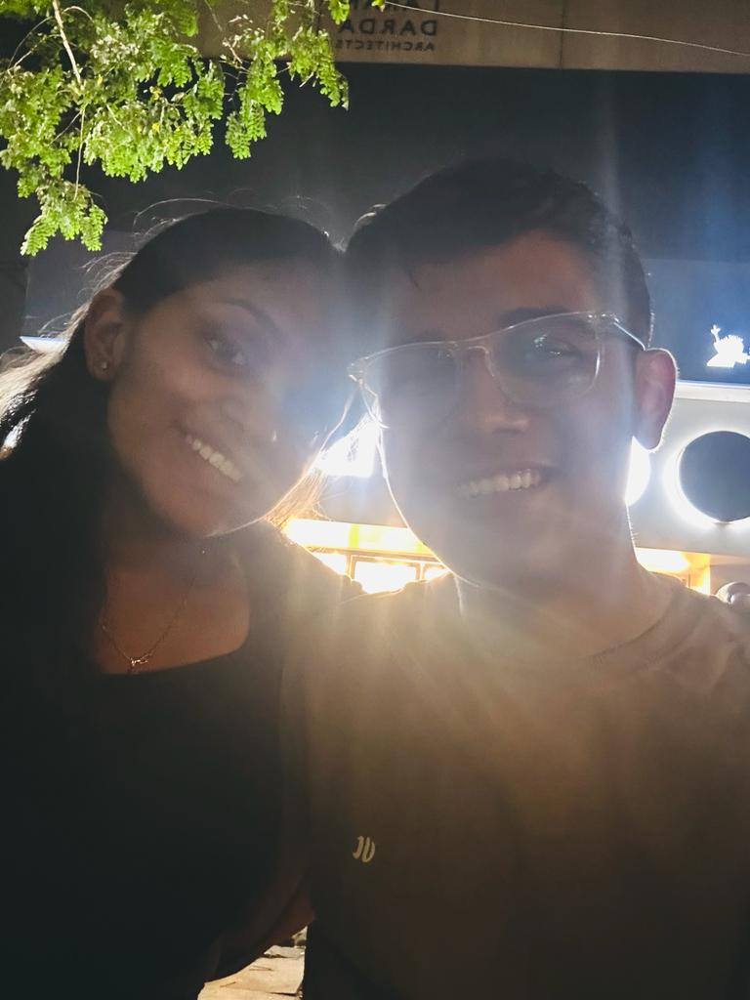
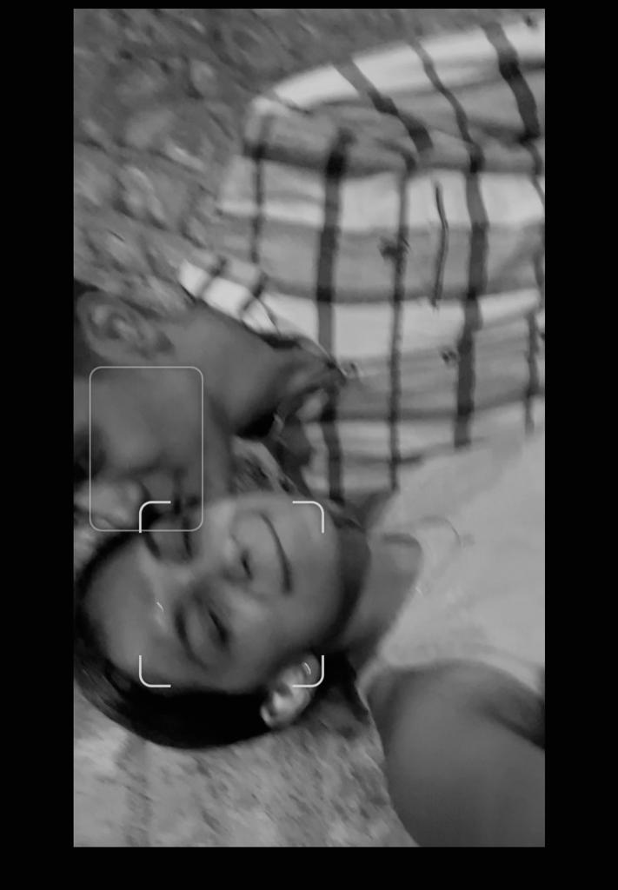
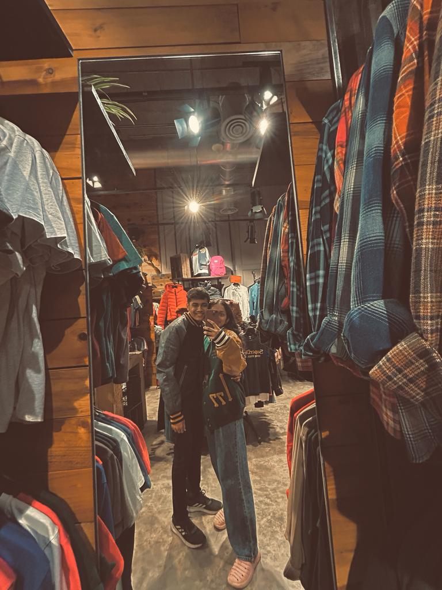

remeber...mihir kadun bhik magun mi gadi ghevun tula pune ride dilto...still remebering how you navigated me back to hostel...
and how you kept your chin on my shoulder...(kind of turn on!)
1 November

we started with simple dating questions to know each other better....this was the question you took around a month to reveal..
Do you want to know the ans...?
you will get it eventually :)
3 November

Our first morning walk!
it was amazing....
still we asked questions from diff different websites...I used to get nervous ki mi kay serach karu google var...
questions for your girlfriend or questions for your girl date???...khup confused hoto yaar...
5 November

Your favourite day D,
still cannot figure out ki maine kya aisa kar diya us din...
but thankyou very much tuzya mule mazhe blog madhe selection zhale!
ahh also it was my first time in starbucks, tuzyakadun treat hoti though...we litreally switched our flavours unknowingly :)
7 November

will remeber this day...pahilyanda tu asa photo pathavlis...I was like damn!
this was the day tu bio cha presentation denar hotis right..pn you gave it like mid dec madhe one month later:(
8 November

How can someone forget this day. Everybody in COEP knows what 9th means for us..(litreally everybody).
I sang your favourite song ever, the day ended beautifully with I getting kiss but it ended bad...I am sorry tuzhe kiss karne ka chnace nahi diya...
I loved jevha apan dupari ep karta ac chya samor baslelo.
9 November

jya divshi relationship madhe alo tya divshi gelo ghari...kaaaa!!
kiti miss kelo diwali madhe mi tula
but who knew this diwali whould be as special as you!
damn, I loved it when we shared our diwali memories roj and discussed about the day...!
12 November

ahh our first dinner date...sorry for keeping you hanging out there that night but the roses were needed yaar :)
20 November

litreally the first kiss ever french of my damn fucking life...no not possible
but you made it possible...D this comes in my best days of us being together beacause the rain :)
mala ajun apla conversation athavta tya divshich when we sat on the bus stand where hope so no one came!
26 November

no way did we gave all theory papers by going to dates in the middle of some of the most important papers in SEM 1
we litreally kissed for the second time on this day...remember...apan tya band pizza shop madhe gelto..
I danced with you...gave like 3 kisses on the face...and many more...ahh enjoyed that day...!
29 November